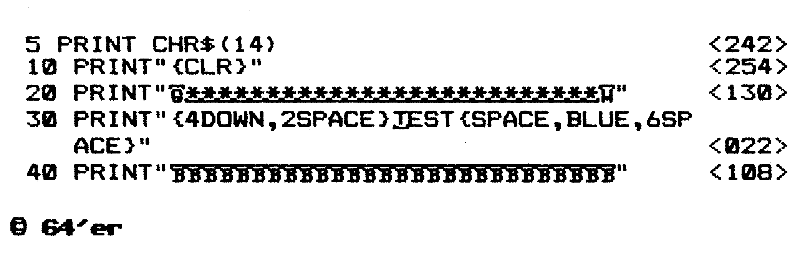

Checksummer V3 und MSE
Diese beiden Programme sind unentbehrlich beim Abtippen unserer Listings. Sie helfen Tippfehler zu vermeiden und sparen eine Menge Zeit.
Nobody is perfect. Jeder Computer-Fan, egal ob blutiger Anfänger oder ausgefuchster Profi, macht beim Abtippen von Programmen Tippfehler. Diese Fehler später zu finden, kann ein langwieriges Unterfangen werden.
Deshalb haben wir für Sie die Programme »Checksummer V3« und »MSE« (MaschinenSpracheEditor) entwickelt. Der Checksummer ist für Basic-Programme und der MSE für Maschinensprache-Listings zuständig.
Checksummer
Zuerst einmal müssen Sie das Checksummer-Programm (siehe Listing 1) abtippen. Dabei sollten Sie äußerst sorgfältig vorgehen, vor allem bei den Zahlen in den DATA-Zeilen 20 bis 30. Wenn Sie trotzdem noch einen Tippfehler gemacht haben, meldet sich das Programm später mit einem entsprechenden Hinweis. Wenn Sie fertig sind, müssen Sie das Programm auf Diskette oder Kassette speichern.
Jetzt geht es los:
- Starten Sie den Checksummer durch die Eingabe von »RUN« und dem Drücken der <RETURN> Taste.
- Wenn die Meldung »Checksummer aktiviert...« auf dem Bildschirm erscheint, haben Sie keinen Tippfehler gemacht und der Checksummer ist nun eingeschaltet.
- Zum Löschen des Basic-Programms geben Sie bitte »NEW« ein. Keine Angst, der Checksummer selbst wird dadurch nicht gelöscht.
- Nun können wir den Checksummer testen. Geben Sie bitte folgende Zeile ein und drücken Sie die <RETURN > Taste:
1 REM
In der linken oberen Bildschirmecke sehen Sie nun die Prüfsumme über die eben eingegebene Basic-Zeile. Sie muß <63> lauten: Dem Checksummer istesübrigensegal, ob Sie »1 REM« oder »IREM« eintippen. Nur innerhalb von Anführungszeichen ist die richtige Anzahl an Leerzeichen wichtig. Diese Prüfsummen erscheinen (sofern Sie den Checksummer eingeschaltet haben) immer dann, wenn Sie eine Basic-Zeile eintippen und dann die <RETURN> Taste drücken. In der 64er finden Sie die Prüfsummen immer am Ende jeder Programmzeile.
Diese Zahlen dürfen Sie NICHT mit abtippen. Sie dienen lediglich zur Kontrolle, ob Sie alles richtig eingegeben haben.
Als Beispiel können Sie sich Bild 1 betrachten. Am rechten Rand jeder Spalte sehen Sie die Prüfsummen in eckigen Klammern.

Damit sind wir beim zweiten wichtigen Punkt: Sehen Sie sich die Zeile 341 von Listing 2 genauer an. Nach dem ersten Anführungszeichen nach dem PRINT:-Befehl sehen Sie ein Zeichen, das Sie auf der Tastatur des C 64 vergeblich suchen werden: die geschweifte Klammer { }. Immer, wenn Sie in einem unserer Listings diese Klammern sehen, dürfen Sie das, was innerhalb der Klammern steht, nicht eintippen. Sie müssen die entsprechende Taste drücken. Beispiel:
10 PRINT "{CLR}"
bedeutet: Nach dem Anführungszeichen die »Bildschirm-löschen«Taste drücken (<SHIFT+CLR/HOME>). In Tabelle 1 sehen Sie eine Zusammenfassung aller möglichen Steuertasten und dem entsprechenden Klartext.
| CTRL steht für Control-Taste, so bedeutet [CTRL-A], daß Sie die Control-Taste und die Taste »A« drücken müssen. Im folgenden steht: | |
| {DOWN} | Taste neben rechtem Shift, Cursor unten |
| {UP} | Shift-Taste & Taste neben rechtem Shift, Cursor hoch |
| {CLR} | Shift-Taste & 2. Taste ganz rechts oben |
| {INST} | Shift-Taste & Taste ganz rechts oben |
| {HOME} | 2. Taste von ganz rechts oben |
| {DEL} | Taste ganz rechts oben |
| {RIGHT} | Taste ganz rechts unten |
| {LEFT} | Shift-Taste & Taste unten rechts |
| {SPACE} | Leertaste |
| {SHIFT-Space} | Shift-Taste & Leertaste |
| {F1} bis {F8} | Funktionstasten |
| {RETURN} | Shift-Taste & Return |
| {BLACK} | Control-Taste & 1 |
| {WHITE} | Control-Taste & 2 |
| {RED} | Control-Taste & 3 |
| {CYAN} | Control-Taste & 4 |
| {PURPLE} | Control-Taste & 5 |
| {GREEN} | Control-Taste & 6 |
| {BLUE} | Control-Taste & 7 |
| {YELLOW} | Control-Taste & 8 |
| {RVSON} | Control-Taste & 9 |
| {RVOFF} | Control-Taste & 0 |
| {ORANGE} | Commodore-Taste & 1 |
| {BROWN} | Commodore-Taste & 2 |
| {LIG.RED} | Commodore-Taste & 3 |
| {GREY 1} | Commodore-Taste & 4 |
| {GREY 2} | Commodore-Taste & 5 |
| {LIG.GREEN} | Commodore-Taste & 6 |
| {LIG.BLUE} | Commodore-Taste & 7 |
| {GREY 3} | Commodore-Taste & 8 |
Weiterhin sehen Sie in Listing 2 (MSE) in Zeile 341 ein unterstrichenes»O«nach dem »P«. Das bedeutet, daß Sie ein»O«zusammen mit der <SHIFT>-Taste drücken müssen, also <SHIFT+O>. Wenn ein Zeichen »überstrichen« ist, müssen Sie dieses zusammen mit der <CBM>-Taste eingeben. Die <CBM>-Taste befindet sich ganz links unten auf der Tastatur und hat die Aufschrift »C=«. Auf dem Bildschirm sehen Sie die entsprechenden Grafikzeichen (siehe Handbuch, Seite 133).
Der MSE
Der MSE dient zur Eingabe von Maschinensprache-Programmen. Als erstes müssen Sie den sogenannten »MSE-Lader« (Listing 2) abtippen. Dieser erzeugt erst das eigentliche MSE-Programm auf Diskette oder Kassette.
Wichtig: Vor dem Eintippen des MSE-Laders müssen Sie unbedingt ein paar Befehle eingeben (ohne Basic-Zeilennummer): POKE 44,32 : POKE 8192,0 : NEW
Jetzt können Sie beginnen, das Listing 2 abzutippen. Der MSE-Lader erkennt zwar, wenn Sie beim Eintippen der DATA-Zeilen einen Fehler gemacht haben, aber wenn Sie ganz sicher gehen möchten, sollten Sie den Checksummer vor dem Eintippen aktivieren. Die Prüfsummen für den MSE-Lader finden Sie am Ende der jeweiligen Programmzeilen.
Wenn Sie das Listing 2 nicht auf einmal abtippen möchten, müssen Sie vor jedem neuen Laden des Programms unbedingt die oben genannte POKE-Zeile eingeben!
Datasetten-Besitzer müssen die »8« am Ende von Zeile 343 in eine »l« ändern.
Wenn Sie alles richtig gemacht haben und das Programm fehlerfrei abgetippt wurde, speichert es sich selbst auf Diskette oder Kassette unter dem Namen »MSE V1.0«. Dieses fertige MSE-Programm laden Sie dann bei Bedarf wie ein normales Basic-Programm und starten es mit »RUN«.
So arbeitet man mit dem MSE
Als erstes möchte der MSE den Namen des zu bearbeitenden Programms wissen. Dieser steht in der ersten Zeile unserer MSE-Listings. Dann müssen Sie die Start- und Endadresse des Programms eingeben. Dies sind die letzten beiden, vierstelligen Hexadezimalzahlen in der ersten Zeile unserer Listings.
Wenn Sie ein Programm von Diskette oder Kassette laden wollen, um an einer bestimmten Stelle weiterzutippen oder noch eine Korrektur vorzunehmen, geben Sie auf die Frage nach der Startadresse ein »L« ein. Danach müssen Sie »D« oder »I« drücken, je nachdem, ob Sie von Diskette oder Kassette (vtape«) laden möchten. Wenn das Programm unter diesem Namen nicht auf der Diskette vorhanden ist, oder ein sonstiger Ladefehler vorlag, meldet sich der MSE mit »/O-ERROR«. In so einem Fall drücken Sie <RUN/STOP +RESTORE> und geben einfach noch einmal »RUN« ein.
Beim Abtippen geben Sie nach und nach die abgedruckten Buchstaben und Zahlen des jeweiligen Listings ohne die Freiräume dazwischen ein. Wenn Sie in einer Zeile einen Tippfehler gemacht haben, meldet sich der MSE sofort mit einem Brummton und der Meldung »EINGABEFEHLER«. Nach einem Druck auf die <RETURN>-Taste können Sie mit der <DEL>-Taste den Fehler korrigieren.
Wenn Sie das gewünschte Programm vollständig eingegeben haben, speichert es der MSE automatisch auf Diskette oder Kassette.
Bei längeren Listings ist es unwahrscheinlich, daß Sie das komplette Programm auf einmal eingeben. Sie können Ihre bisherige Tipparbeit jederzeit durch <CTRL+S> auf Diskette oder Kassette speichern und Ihr Werk später fortsetzen. Sie sollten sich dann allerdings im Heft markieren, wie weit Sie beim Abtippen gekommen sind! Später geben Sie dann nach dem Laden des ersten Programmteils <CTRL+N> ein und auf die dann folgende Frage nach der Startadresse die Zeilennummer (Adresse), bei der Sie aufgehört haben zu tippen.
<CTRL+M> erlaubt Ihnen jederzeit, Ihr Werk listen zu lassen. Durch <SPACE > können Sie weiterlisten lassen und durch <RUN/STOP> das Listen abbrechen.
Wenn Sie einen Drucker besitzen, können Sie das Programm auch mit <CTRL+P> ausdrucken.
Mit <CTRL+L> wird das Programm noch einmal neu in Ihren C 64 geladen.
(F. Lonczewski/N. Mann/D. Weineck/tr)100 REM **************************** <091>
110 REM * * <159>
120 REM * M S E LADER * <206>
130 REM * * <179>
220 REM **************************** <211>
230 REM <036>
240 DIM H(75): FOR I=0 TO 9 <113>
250 H(48+I)=I: H(65+I)=I+10:NEXT <041>
260 FOR I=2048 TO 3755 : READ A$ <198>
270 H=ASC(LEFT$(A$,1)):L=ASC(RIGHT$(A$,1)) <199>
280 D=H(H)*16+H(L):S=S+D:POKE I,D <219>
290 A=A+1:IF A<20 THEN NEXT:A=-1 <141>
300 PRINT " ZEILE:";1000+Z; <011>
310 READ V :Z=Z+1:IF V=S THEN 330 <218>
320 PRINT"PRUEFSUMMENFEHLER !":STOP <138>
330 IF A<0 THEN 341 <221>
340 S=0:A=0:PRINT:NEXT <046>
341 PRINT"{CLR}PO43,1:PO44,8:PO45,172:PO46
,14 <010>
342 POKE 631,19:POKE 632,13:POKE 633,13:PO
KE 198,3 <249>
343 PRINT"{3DOWN}SAVE"CHR$(34)"MSE V1.0"CH
R$(34)",8 <171>
344 END <092>
1000 DATA 00,0B,08,0A,00,9E,32,30,36,31,00
,00,00,A2,08,A9,36,85,A4,A9, 1247 <119>
1001 DATA 08,85,A5,A9,00,85,A6,A9,B0,85,A7
,A0,00,B1,A4,91,A6,C8,D0,F9, 2888 <054>
1002 DATA E6,A5,E6,A7,CA,D0,F2,A9,36,85,01
,4C,00,B0,20,D1,B1,A9,06,8D, 2787 <144>
1003 DATA 21,D0,A9,03,8D,20,D0,8D,86,02,A0
,B3,A9,74,20,FF,B1,A0,B3,A9, 2667 <237>
1004 DATA B9,20,FF,B1,A0,00,20,CF,FF,99,01
,02,C8,C9,0D,D0,F5,88,F0,D2, 2912 <217>
1005 DATA C0,0F,90,02,A0,0E,8C,00,02,20,EA
,B1,A0,B3,A9,CF,20,FF,B1,20, 2323 <013>
1006 DATA 8E,B4,85,FC,85,62,20,8E,B4,85,FB
,85,61,20,A7,B4,D0,20,A0,B3, 2864 <199>
1007 DATA A9,E5,20,FF,B1,20,8E,B4,85,60,20
,8E,B4,85,5F,20,A7,B4,D0,0A, 2624 <091>
1008 DATA A5,61,C5,5F,A5,62,E5,60,90,06,20
,43,B3,4C,3A,B0,A9,AA,A0,00, 2379 <167>
1009 DATA 91,FB,E6,FB,D0,02,E6,FC,20,3F,B2
,90,EF,4C,FB,B4,A2,02,86,58, 3118 <152>
1010 DATA A9,A6,A0,9D,20,F2,B1,20,E4,FF,F0
,FB,C9,30,90,0C,C9,47,B0,08, 2970 <231>
1011 DATA C9,3A,90,0B,C9,41,B0,07,C9,14,D0
,0F,4C,0B,B1,20,D2,FF,A6,58, 2322 <121>
1012 DATA 95,F7,C6,58,D0,D2,60,AE,8D,02,F0
,26,C9,0C,D0,03,4C,0B,B6,C9, 2685 <057>
1013 DATA 13,D0,03,4C,8B,B5,C9,0D,D0,03,4C
,BA,B4,C9,10,D0,03,4C,68,B5, 2282 <225>
1014 DATA C9,0E,D0,06,20,5F,B4,4C,64,B1,4C
,92,B0,A5,F9,20,02,B1,0A,0A, 2132 <208>
1015 DATA 0A,0A,85,F9,A5,F8,20,02,B1,05,F9
,60,C9,3A,90,02,69,08,29,0F, 1950 <092>
1016 DATA 60,A6,59,E0,08,90,1F,A6,58,E0,02
,B0,06,20,D2,FF,4C,8E,B0,C6, 2509 <188>
1017 DATA 59,A0,14,A9,92,20,F2,B1,CA,D0,FA
,84,57,68,68,4C,8B,B1,A6,D3, 2891 <197>
1018 DATA E0,08,B0,03,4C,92,B0,20,D2,FF,A6
,58,E0,02,90,09,C6,59,20,D2, 2468 <049>
1019 DATA FF,C6,58,D0,F9,4C,8E,B0,48,4A,4A
,4A,4A,20,59,B1,68,29,0F,C9, 2419 <035>
1020 DATA 0A,90,02,69,06,69,30,4C,D2,FF,A2
,FC,9A,20,D1,B1,20,48,B2,20, 2261 <073>
1021 DATA EA,B1,20,9F,B2,A5,FC,20,4E,B1,A5
,FB,20,4E,B1,20,ED,B1,A9,3A, 2860 <148>
1022 DATA A0,20,20,F2,B1,A9,00,85,59,20,8E
,B0,20,ED,B1,A4,59,20,EF,B0, 2530 <233>
1023 DATA 91,FB,C8,84,59,C0,08,90,EC,20,10
,B2,A9,12,20,D2,FF,20,8E,B0, 2657 <105>
1024 DATA 20,EF,B0,C5,FF,F0,0D,20,43,B3,A9
,14,A0,14,20,F2,B1,4C,A2,B1, 2665 <034>
1025 DATA A9,92,20,D2,FF,20,33,B2,20,E0,B2
,20,3F,B2,90,9F,4C,8B,B5,A9, 2648 <123>
1026 DATA 93,20,D2,FF,A2,00,A9,03,9D,00,D8
,9D,00,D9,9D,00,DA,9D,00,DB, 2476 <237>
1027 DATA E8,D0,EF,60,A9,0D,2C,A9,20,4C,D2
,FF,20,D2,FF,98,4C,D2,FF,20, 2965 <160>
1028 DATA E4,FF,F0,FB,60,84,5D,85,5C,A0,00
,B1,5C,F0,06,20,D2,FF,C8,D0, 3100 <077>
1029 DATA F6,60,A5,FB,85,5A,A0,00,84,5B,B1
,FB,18,65,5A,85,5A,90,02,E6, 2606 <156>
1030 DATA 5B,06,5A,26,5B,C8,C0,08,90,EC,A5
,5A,65,5B,85,FF,60,18,A5,FB, 2467 <219>
1031 DATA 69,08,85,FB,90,02,E6,FC,60,A5,FB
,C5,5F,A5,FC,E5,60,60,A0,B3, 3106 <183>
1032 DATA A9,FB,20,FF,B1,A0,01,B9,00,02,20
,D2,FF,CC,00,02,C8,90,F4,A9, 2692 <098>
1033 DATA 10,ED,00,02,AA,20,ED,B1,CA,D0,FA
,A5,62,20,4E,B1,A5,61,20,4E, 2453 <236>
1034 DATA B1,20,ED,B1,A5,60,20,4E,B1,A5,5F
,20,4E,B1,A9,9F,20,D2,FF,20, 2575 <038>
1035 DATA EA,B1,24,5E,10,01,60,A9,12,20,D2
,FF,A2,28,20,ED,B1,CA,D0,FA, 2646 <161>
1036 DATA A9,92,4C,D2,FF,A5,D6,C9,16,B0,01
,60,A9,A0,85,A4,A9,78,85,A6, 2945 <204>
1037 DATA A9,04,85,A5,85,A7,A2,13,A0,27,B1
,A4,91,A6,88,10,F9,CA,F0,19, 2671 <208>
1038 DATA 18,A5,A4,69,28,85,A4,90,02,E6,A5
,18,A5,A6,69,28,85,A6,90,E0, 2503 <251>
1039 DATA E6,A7,4C,B6,B2,A9,91,4C,D2,FF,A9
,0F,8D,18,D4,A9,00,8D,05,D4, 2776 <000>
1040 DATA A9,F7,8D,06,D4,A9,11,8D,04,D4,A9
,32,8D,01,D4,A9,00,8D,00,D4, 2413 <126>
1041 DATA A0,80,20,09,B3,A9,10,8D,04,D4,60
,A2,FF,CA,D0,FD,88,D0,F8,60, 2914 <240>
1042 DATA A9,0F,8D,18,D4,A9,2D,8D,05,D4,A9
,A5,8D,06,D4,A9,21,8D,04,D4, 2385 <119>
1043 DATA A9,07,8D,01,D4,A9,05,8D,00,D4,A0
,FF,20,09,B3,A9,20,8D,04,D4, 2250 <078>
1044 DATA A9,00,8D,01,D4,8D,00,D4,60,38,20
,F0,FF,8A,48,98,48,18,A0,06, 2179 <175>
1045 DATA A2,18,20,F0,FF,A0,B4,A9,0A,20,FF
,B1,20,12,B3,20,E4,FF,F0,FB, 2931 <093>
1046 DATA A2,1D,A9,14,20,D2,FF,CA,D0,FA,68
,A8,68,AA,18,4C,F0,FF,0D,0D, 2704 <088>
1047 DATA 0D,20,20,20,20,20,20,20,4D,41,53
,43,48,49,4E,45,4E,53,50,52, 1144 <216>
1048 DATA 41,43,48,45,20,2D,20,45,44,49,54
,4F,52,20,0D,0D,20,20,20,20, 1023 <038>
1049 DATA 20,20,20,20,56,4F,4E,20,4E,2E,4D
,41,4E,4E,20,26,20,44,2E,57, 1128 <206>
1050 DATA 45,49,4E,45,43,4B,00,0D,0D,0D,20
,20,20,50,52,4F,47,52,41,4D, 1102 <117>
1051 DATA 4D,4E,41,4D,45,20,3A,20,00,0D,0D
,20,20,20,53,54,41,52,54,41, 1073 <095>
1052 DATA 44,52,45,53,53,45,20,3A,20,24,00
,0D,0D,20,20,20,45,4E,44,41, 1014 <129>
1053 DATA 44,52,45,53,53,45,20,20,20,3A,20
,24,00,92,05,20,50,52,4F,47, 1171 <217>
1054 DATA 52,41,4D,4D,20,3A,20,00,12,20,20
,2A,2A,2A,20,46,41,4C,53,43, 1024 <027>
1055 DATA 48,45,20,45,49,4E,47,41,42,45,20
,2A,2A,2A,20,20,92,00,0D,0D, 1058 <098>
1056 DATA 2A,2A,2A,20,45,4E,44,45,20,2A,2A
,2A,00,13,05,20,20,12,44,92, 920 <148>
1057 DATA 49,53,4B,20,4F,44,45,52,20,12,54
,92,41,50,45,0D,00,13,20,20, 1151 <035>
1058 DATA 49,2F,4F,20,2D,20,46,45,48,4C,45
,52,00,20,D1,B1,20,48,B2,A0, 1606 <012>
1059 DATA B3,A9,CF,20,FF,B1,20,8E,B4,85,FC
,20,8E,B4,85,FB,C5,61,A5,FC, 3207 <251>
1060 DATA E5,62,90,23,A5,FB,C5,5F,A5,FC,E5
,60,B0,19,20,A7,B4,D0,14,60, 2860 <112>
1061 DATA 20,A7,B4,F0,0C,85,F9,20,A7,B4,F0
,05,85,F8,4C,EF,B0,68,68,20, 2749 <088>
1062 DATA 43,B3,4C,5F,B4,20,CF,FF,C9,4C,D0
,09,20,D1,B1,20,48,B2,4C,0B, 2372 <046>
1063 DATA B6,C9,0D,60,A9,00,85,5E,20,5F,B4
,20,EA,B1,20,0D,B5,24,5E,30, 2042 <120>
1064 DATA 05,20,E4,FF,F0,FB,20,E1,FF,F0,26
,20,9F,B2,24,5E,10,09,20,4E, 2435 <198>
1065 DATA B5,20,0D,B5,20,60,B5,20,33,B2,20
,3F,B2,90,D7,A0,B4,A9,28,20, 2190 <207>
1066 DATA FF,B1,20,E4,FF,C9,0D,D0,F9,A9,00
,85,5E,A5,61,85,FB,A5,62,85, 3056 <240>
1067 DATA FC,20,E0,B2,4C,64,B1,A5,FC,20,4E
,B1,A5,FB,85,FF,20,4E,B1,A9, 3003 <221>
1068 DATA 20,A0,3A,20,F2,B1,A0,00,20,ED,B1
,B1,FB,20,4E,B1,C8,C0,08,90, 2566 <070>
1069 DATA F3,20,ED,B1,24,5E,30,03,A9,12,2C
,A9,20,20,D2,FF,20,10,B2,A5, 2190 <059>
1070 DATA FF,20,4E,B1,A9,92,20,D2,FF,4C,EA
,B1,A9,FF,85,B8,85,B9,A9,04, 3073 <029>
1071 DATA 85,BA,20,C0,FF,A2,FF,4C,C9,FF,20
,CC,FF,A9,FF,4C,C3,FF,20,5F, 3315 <189>
1072 DATA B4,A9,80,85,5E,20,4E,B5,20,48,B2
,A2,24,A9,2D,20,D2,FF,CA,D0, 2596 <111>
1073 DATA FA,20,EA,B1,20,EA,B1,20,60,B5,4C
,C1,B4,20,B8,B5,A6,5F,A4,60, 2812 <015>
1074 DATA A9,61,20,D8,FF,B0,0A,20,B7,FF,29
,BF,D0,03,4C,FB,B4,A9,01,20, 2577 <201>
1075 DATA C3,FF,20,68,B6,A0,B4,A9,4F,20,FF
,B1,20,F9,B1,4C,FB,B4,20,68, 2921 <237>
1076 DATA B6,A9,37,A0,B4,20,FF,B1,20,F9,B1
,A2,08,C9,44,F0,06,A2,01,C9, 2717 <213>
1077 DATA 54,D0,F1,A9,01,A8,20,BA,FF,A0,00
,E0,01,F0,1A,A9,40,8D,20,02, 2403 <101>
1078 DATA A9,3A,8D,21,02,B9,01,02,99,22,02
,C8,CC,00,02,90,F4,C8,C8,D0, 2182 <127>
1079 DATA 0C,B9,01,02,99,20,02,C8,CC,00,02
,D0,F4,98,A2,20,A0,02,4C,BD, 2018 <025>
1080 DATA FF,20,B8,B5,A5,BA,C9,08,90,33,A6
,B9,86,57,A9,01,20,C3,FF,A9, 2800 <022>
1081 DATA 60,85,B9,20,C0,FF,B0,28,A5,BA,20
,B4,FF,A5,B9,20,96,FF,20,A5, 2911 <053>
1082 DATA FF,85,61,A5,90,4A,4A,B0,13,20,A5
,FF,85,62,20,AB,FF,A5,57,85, 2663 <214>
1083 DATA B9,A9,00,20,D5,FF,90,03,4C,A3,B5
,86,5F,84,60,A5,BA,C9,01,D0, 2639 <131>
1084 DATA 0A,AD,3D,03,85,61,AD,3E,03,85,62
,4C,FB,B4,A9,13,20,D2,FF,A2, 2300 <120>
1085 DATA 1C,20,ED,B1,CA,D0,FA,60, 1230 <214>